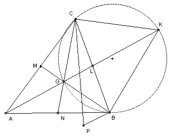

ABC is a triangle with centroid G and side lengths a = BC, b = CA, c = AB. Find the point P in the plane which minimises AP.AG + BP.BG + CP.CG and find the minimum in terms of a, b, c.
Solution

Applying the sine rule to triangle BGL, we have BG/sin BLG = BL/sin BGK. Similarly applying the sine rule to triangle CGL, we have CG/sin CLG = CL/sin CGK. But L is the midpoint of BC and sin BLG = sin CLG, so BG/CG = sin CGK/sin BGK.
We have BK = 2 R sin BGK, where R is the radius of the circle (because if O is its center then ∠BOK = 2 ∠BGK). Similarly, CK = 2 R sin CGK, so CK/BK = BG/CG, and hence BG/CK = CG/BK.
Similarly, AG/BG = sin BGN/sin AGN = sin BGN/sin CGK (opposite angles). Also BC = 2 R sin BKC = 2 R sin BGN (since BGCK is cyclic, so angle BKC = angle BGN). Hence BC/CK = sin BGN/sin CGK = AG/BG, so BG/CK = AG/BC and hence BC : CK : BK = AG : BG : CG.
We now use Ptolemy's theorem on the quadrilateral PBKC: PK.BC <= BP.CK + CP.BK. Hence PK.AG <= BP.BG + CP.CG. Hence (AP + PK)AG <= AP.AG + BP.BG + CP.CG and so finally AK.AG <= AP.AG + BP.BG + CP.CG with equality iff (1) P lies on the circle between B and C (for equality in Ptolemy) and (2) P lies on AK (for equality in the triangle inequality). Thus the unique minimum is when P = G.
Using the cosine formula, we have AB2 = AL2 + BL2 - 2 BL.AL cos ALB, AC2 = AL2 + CL2 - 2 CL.AL cos ALC. Adding, AB2 + AC2 = 2 AL2 + BC2/2, so AG2 =(4/9) AL2 = (2 AB2 + 2 AC2 - BC2)/9. Hence AG2 + BG2 + CG2 = (AB2 + BC2 + CA2)/3.

© John Scholes
jscholes@kalva.demon.co.uk
14 Oct 2002